01
Kuvaa
Kuvia työmaan kiinteistä kameroista automaattisesti neljän tunnin välein, tai puhelimella, kameralla tai droonilla suunnitelman koordinaateissa ladattuina.
Toimiva prototyyppi / Seuraavaksi kenttätesti
WorkGuardAI lukee DWG-suunnitelman, joka teillä jo on, ja mittaa maarakennustöiden edistymistä tavallisista työmaakuvista sijainti kerrallaan. Prototyyppi toimii todellisen hankkeen suunnitelmalla ja kuvilla. Nyt etsimme ensimmäistä pilottityömaata.
25.–26.11.2026 Pitchaamme lavalla MeOut Summitissa Budapestissa
01 · Näin se toimii
01 Kuvaa
Valokuva suunnitelman pisteestä
02 Analysoi
Syvyys arvioidaan kuvasta
03 Vertaa
Arvioitu syvyys suhteessa suunniteltuun
04 Toimi
Sähköpostihälytys, jossa koordinaatit ja syvyydet
Kuvia työmaan kiinteistä kameroista automaattisesti neljän tunnin välein, tai puhelimella, kameralla tai droonilla suunnitelman koordinaateissa ladattuina.
Avoimen lähdekoodin tekoälymalli (Depth Anything V2) arvioi kaivannon syvyyden metreinä jokaisesta kuvasta sen suunnitelmakoordinaatissa.
Arvioitua syvyyttä verrataan DWG-suunnitelman mukaiseen syvyyteen, jolloin saadaan edistyminen suunnitelman jokaisessa pisteessä.
Jokainen piste näyttää tilansa värillä, kokonaisedistymispalkki kokoaa työmaan tilanteen, ja sähköpostihälytykset kertovat koordinaatit sekä nykyisen ja suunnitellun syvyyden.
Havainnollistava konsepti esimerkkidatalla. Toimiva prototyyppi; kenttätesti tulossa.
Tavallisia työmaakuvia, kuten niitä, joita prototyyppi mittaa: puhelimella tai droonilla, päivällä ja yöllä.
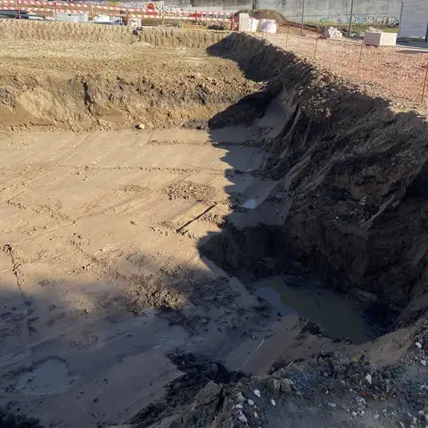
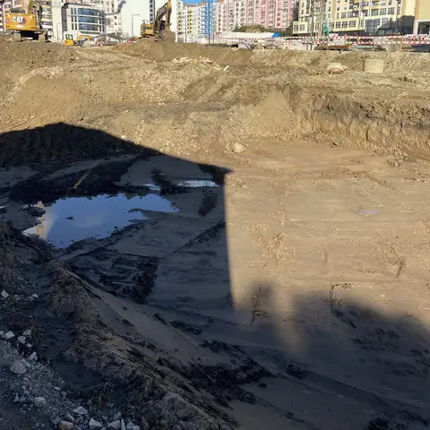
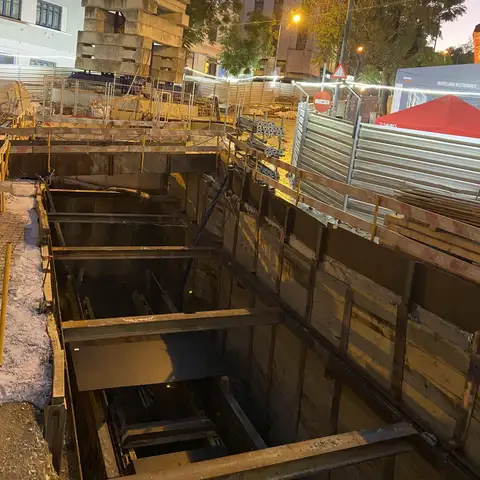
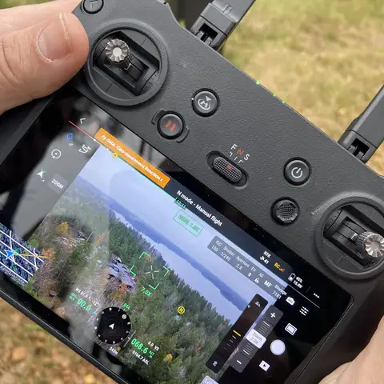
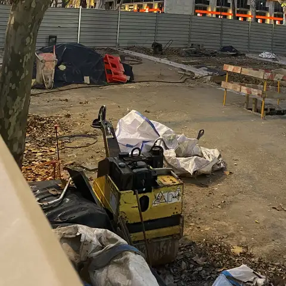
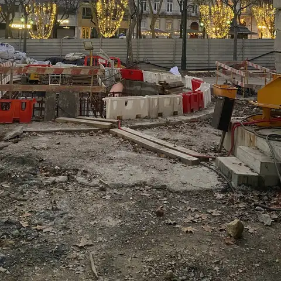
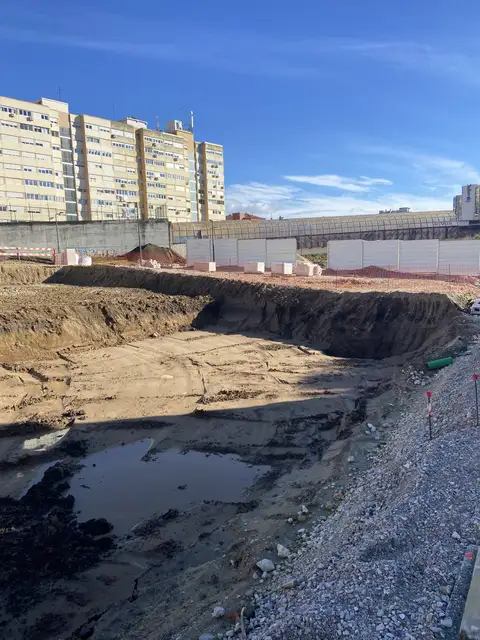
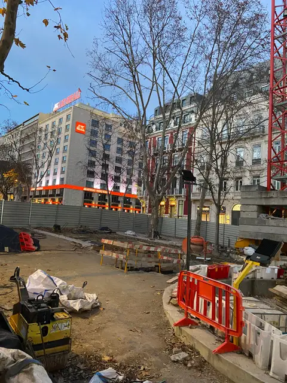
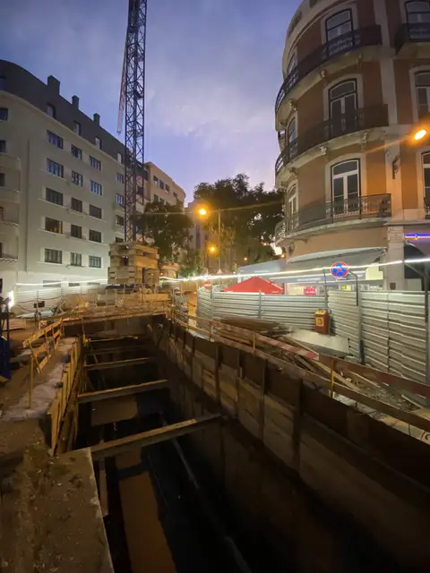
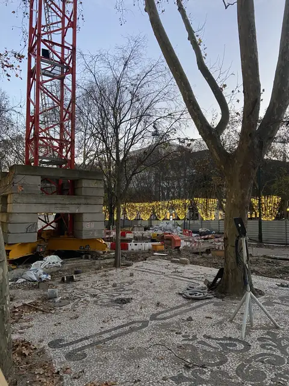
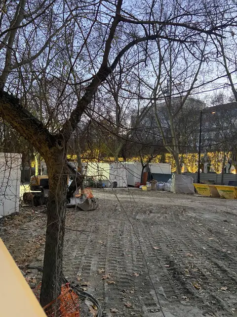
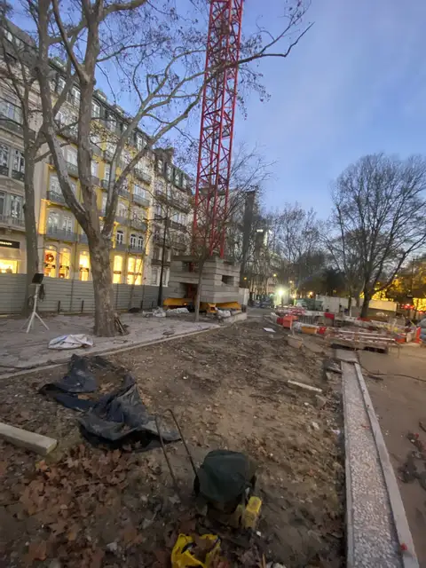
02 · Prototyyppi
Prototyyppiä on esitelty todellisella DWG-tiedostolla ja todellisilla työmaakuvilla. Se ei ole vielä ollut käytössä käynnissä olevalla työmaalla. Ensimmäinen kenttätesti on seuraava vaihe.
Prototyypin käyttöliittymä, testattu todellisen hankkeen suunnitelmalla ja kuvilla. Seuraavaksi kenttätesti. Asiakkaan tiedostonimet, työmaan koordinaatit ja luvut on sumennettu.
03 · Mitä saat
DWG-suunnitelmanne, työmaakuvat ja niistä arvioitu syvyys kootaan yhteen näkymään. Tiimi näkee edistymisen jokaisessa pisteessä ja saa hälytyksen, kun pistettä pitää katsoa.
DWG-suunnitelma · koordinaattikartta
Ei aloitettu <10%KäynnissäValmis >90%
Kokonaisedistyminen
62%
Piste D·04
Suunniteltu syvyys−2.40 m
Arvioitu syvyys−1.49 m
Edistyminen62%
Ilmoitukset
WorkGuardAI10:42
Hälytys · D·07
Nykyinen syvyys−1.10 m
Suunniteltu syvyys−2.40 m
Lataa kuva
Olemassa olevasta suunnitelmasta tulee pisteverkko, jossa jokaisella pisteellä on suunniteltu syvyys.
Jokainen piste näyttää arvioidun syvyyden suunniteltuun verrattuna, väritettynä ei aloitettu, käynnissä tai valmis.
Kokonaisedistymisen palkki näyttää koko työmaan yhdellä silmäyksellä.
Työmaan kamerat lähettävät kuvan automaattisesti neljän tunnin välein.
Tiimi lisää kuvia puhelimesta, kamerasta tai dronesta suunnitelman koordinaattiin.
Tekoälypohjainen syvyysmalli arvioi kaivusyvyyden metreinä jokaisesta kuvasta.
Hälytykset kertovat koordinaatit sekä nykyisen ja suunnitellun syvyyden, jotta oikea henkilö voi tarkistaa oikean paikan.
Näkymä listaa, mikä muuttui ja missä, piste pisteeltä.
Pilotissa olemme yhteydessä viikoittain ja vertaamme tuloksia omiin mittauksiinne.
Toimitamme ohjelmiston ja autamme sen käyttöönotossa työmaalla: asennus, yhteydet ja testaus.
Visio
Sama suunnitelma ja samat kuvat avaavat tien useampaan. Nämä ideat ovat tiekartallamme.
Ajatuksena on yhdistää mitatut määrät sopimuksen yksikköhintoihin, jotta laskutus voi seurata todella tehtyä työtä.
Suunniteltu arvioimaan samoista kuvista, kuinka paljon maata ja kalliota on kaivettu ja kuinka paljon on jäljellä.
Ajatuksena on ilmoittaa, kun ihminen on koneen työskentelyalueella, tunnistamatta kuka hän on.
Voi auttaa vertaamaan kaivua johtokarttoihin muistutuksena tarkistaa kaapelit ja putket ennen kuin työ jatkuu.
Ajatuksena on seurata rakenteiden, kuten patoseinien, muutoksia ajan mittaan toistuvista kuvista.
Ajatuksena on tuoda mukaan BIM-mallit ja toimittajatiedot, jotta suunnitelmaa, toimituksia ja edistymistä voi verrata yhdessä paikassa.
Kameran GPS yhdistettynä LiDARiin, jotta kuvat voidaan paikantaa ja syvyys mitata tarkemmin.
Turvallisuusideat ovat konsepteja. Ne eivät korvaa työmaan turvallisuusmenettelyjä eivätkä johtonäyttöjä.
04 · Kenelle
Teillä on jo DWG-suunnitelma. WorkGuardAI näyttää sen avulla, kuinka pitkälle kaivu- ja maarakennustyöt ovat edenneet kussakin sijainnissa, kuvista, joita tiiminne voi ottaa tavallisella työmaakäynnillä.
Kaupungit ja virastot, jotka tilaavat teitä, verkostoja ja muita julkisia rakennuskohteita, voivat seurata edistymistä sijainneittain hyväksyttyyn suunnitelmaan verrattuna, työmaakuvista mitattuna.
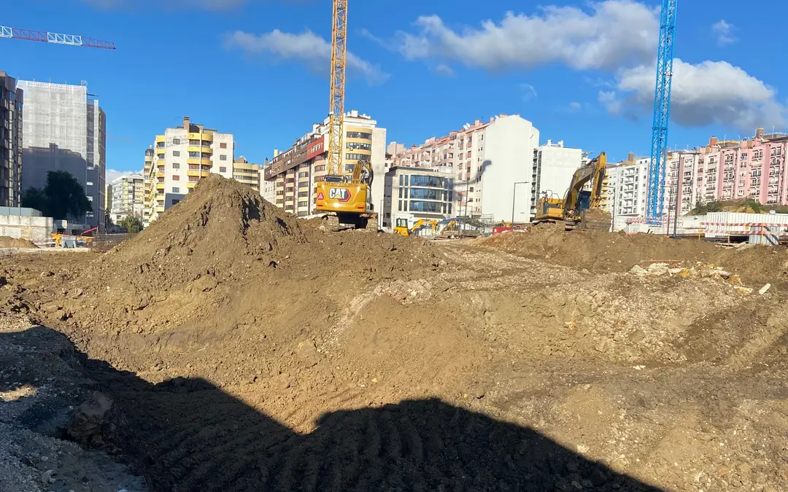
05 · Meistä
WorkGuardAI perustettiin Suomessa 30.7.2024. Tiimi työskentelee eri puolilla Eurooppaa, lähellä niitä urakoitsijoita ja julkisia tilaajia, jotka tuotetta käyttäisivät.
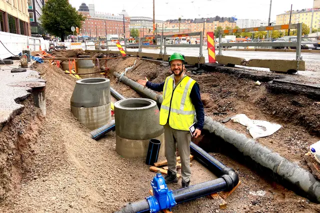
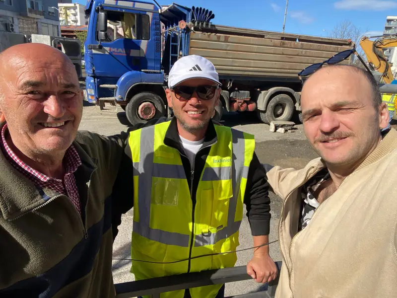
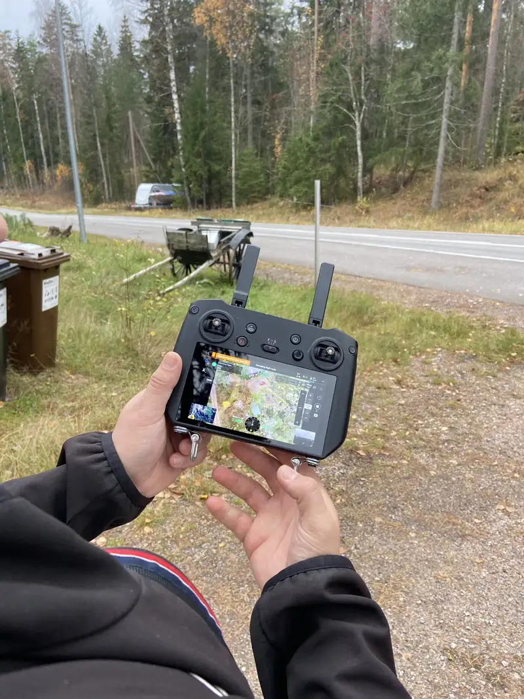
06 · Virstanpylväät
Kolme vuotta ohjelmia, kilpailuja ja rakentamista, jokainen askel lähteineen.

MeOut Summit · Budapest, Unkari
1/20
startupista, jotka valittiin noin 200 hakemuksen joukosta pitchaamaan lavalla MeOut Summitin Pitch Marathonissa Budapestissa, Unkarissa, 25.–26.11.2026.
Baltic Impact Accelerator
8 000 €
ohjelmarahoitusta LUT-yliopiston Baltic Impact Acceleratorista (Interreg Central Baltic, EU:n osarahoittama), MVP:n rakentamiseen.
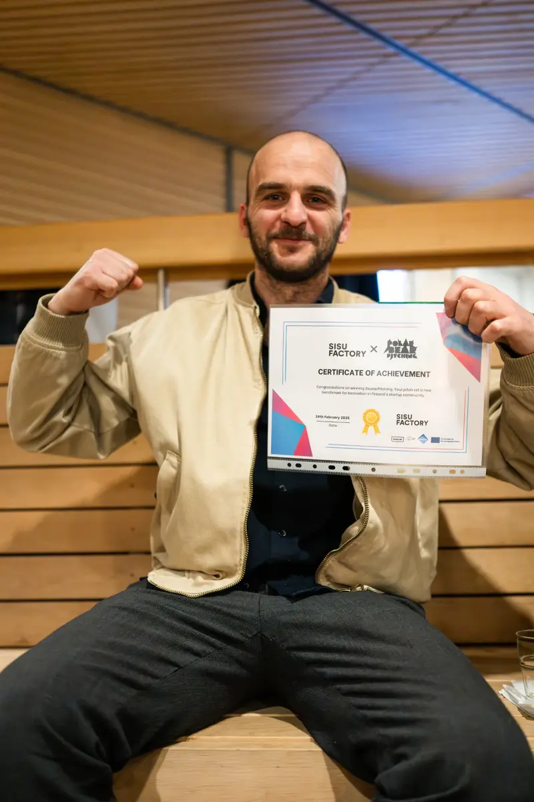
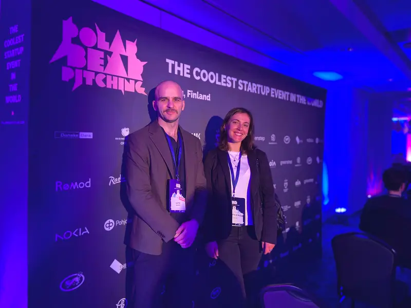
Pitchasi AIREX 2026 PropTech Competitionissa Bakussa 6. marraskuuta sijoittajista ja ekosysteemin edustajista koostuvalle tuomaristolle.
Valittiin yhdeksi 20 startupista noin 200 hakemuksen joukosta pitchaamaan lavalla Pitch Marathonissa 25.–26.11. sijoittajaraadin edessä. Esillä EU-Startupsissa.
Artikkeli EU-Startupsissa (avautuu uuteen välilehteen)Pääsi jatkoon pitchaamaan 10 viikon kasvuohjelmaan, jonka tilaaja on Tampereen kaupunki, ja pitchasi valintaraadille Selection Dayna 9.9.
VINCI Energies kiinnostui alustavan arvioinnin jälkeen, ja haimme sen vuoden 2026 haasteeseen ”Expertise meets AI”.
Suoritimme kuuden kuukauden kiihdyttämön kolmannen ryhmän. Ohjelman rahoittaa Interreg Central Baltic ja osarahoittaa Euroopan unioni; ohjelmarahoitusta 8 000 €.
Tietoa ohjelmasta (avautuu uuteen välilehteen)Ydinmoottori rakennettiin yhdessä kehityskumppanin kanssa, Baltic Impact Acceleratorin rahoituksella. Rakennettu infraurakoitsijan työmaapäällikön näkemysten pohjalta ja testattu yhdellä todellisella hankesuunnitelmalla.
Mukana Slush 2025 -tapahtumassa Helsinki Incubatorsin alumnien joukossa.
Tiedote LinkedInissä (avautuu uuteen välilehteen)Osallistui kolmen kaupungin yhteiseen innovaatiohaasteeseen ja jätti tarjouksen niiden hankinnassa.
Vieraileva startup Polar Bear Pitchingissä Oulussa 27.2.2025 – palkinto Sauna Pitchingin voitosta.
Voitimme Sauna Pitchingin 24.2.2025.
Tiedote LinkedInissä (avautuu uuteen välilehteen)Suoritimme Helsinki Incubatorsin kuuden kuukauden ohjelman: mentorit ja viikoittaiset työpajat liiketoimintamalleista, myynnistä ja pitchaamisesta.
Yhtiö perustettiin Suomessa 30.7.2024.
Idea syntyi ajoneuvojen etävalvontana. Mentorien palaute ja pitchaaminen kääntivät sen kohti rakennustyömaita.
TUKIJAT
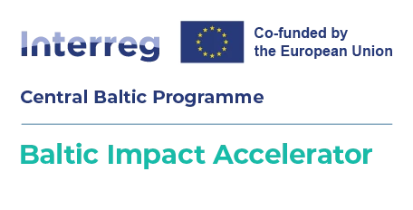
Suoritetut ohjelmat: Baltic Impact Accelerator (LUT-yliopisto, Interreg Central Baltic) ja NEXUS Incubator (Helsinki Incubators, Helsingin yliopisto).
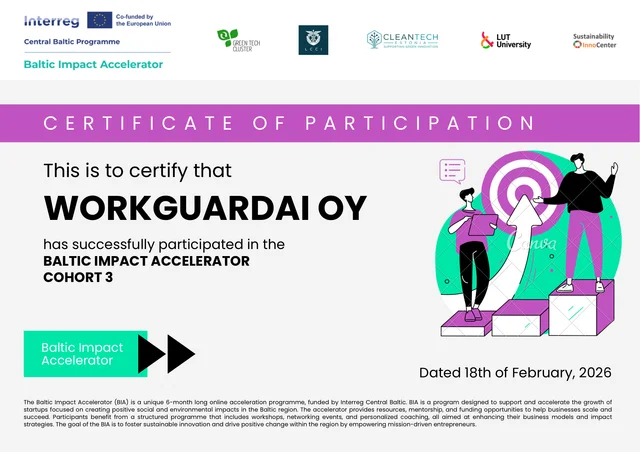
07 · Uutiset
Valittiin yhdeksi 20 startupista noin 200 hakemuksen joukosta pitchaamaan lavalla Pitch Marathonissa 25.–26.11. sijoittajaraadin edessä. Esillä EU-Startupsissa.
Artikkeli EU-Startupsissa (avautuu uuteen välilehteen)Pitchasi AIREX 2026 PropTech Competitionissa Bakussa 6. marraskuuta sijoittajista ja ekosysteemin edustajista koostuvalle tuomaristolle.
Virallinen lähde (avautuu uuteen välilehteen)Pääsi jatkoon pitchaamaan 10 viikon kasvuohjelmaan, jonka tilaaja on Tampereen kaupunki, ja pitchasi valintaraadille Selection Dayna 9.9.
08 · Tiimi


09 · UKK
Emme tiedä vielä, koska tarkkuutta ei ole mitattu käynnissä olevalla työmaalla. Sitä varten pilotti on: vertaamme arvioituja syvyyksiä omiin mittauksiinne ja annamme tulokset kirjallisena raporttina.
Prototyyppi arvioi maan syvyyttä suunnitelman pisteissä. Se ei tunnista eikä seuraa ihmisiä. Käytettävistä kameroista, niiden suuntauksesta, kuvien näkijöistä ja säilytysajasta sovitaan kirjallisessa pilottisopimuksessa ennen kuin yhtään kuvaa otetaan.
Työmaan DWG-suunnitelman sekä pääsyn työmaakameroihin tai henkilön, joka voi ottaa kuvia suunnitelman koordinaateista.
Ei vielä. Prototyyppi toimii todellisen hankkeen DWG-suunnitelmalla ja kuvilla. Pilotti on ensimmäinen testi käynnissä olevalla työmaalla, ja vertaamme tuloksia omiin mittauksiinne.
10 · Tee työtä kanssamme
Maanrakennus- ja infratiimit, joilla on DWG-suunnitelma ja jotka haluavat testata edistymisen mittausta oikealla työmaalla.
Varaa pilottipuheluTutkimus- ja oppimisyhteistyö: opiskelijat ja tutkijat työskentelevät oikean prototyypin kanssa; laajuudesta, datan käytöstä ja IP-oikeuksista sovitaan ensin kirjallisesti.
Keskustellaan yhteistyöstäJärjestätkö tapahtumaa tai osallistutko samaan tapahtumaan kuin me? Kerro, mihin.
Tapaa meidät: MeOut Summit, BudapestFaktat, kuvat ja yhteystiedot ovat mediasivulla. Media ja puheenvuorot
Ota yhteyttä11 · Tapahtumat
Pitchaamme lavalla MeOut Summitissa Budapestissa
12 · Pilotti
Etsimme ensimmäistä käynnissä olevaa työmaata. Jos teette maarakennus- tai infratöitä ja teillä on niihin DWG-suunnitelmat, lyhyt puhelu riittää selvittämään, sopiiko pilotti.
Näytämme prototyypin esimerkkihankkeella ja tarkistamme, sopiiko työmaanne: maarakennus- tai infratyö, DWG-suunnitelmat ja joku, joka voi ottaa kuvia.
Yksi työmaa, kiinteä jakso ja selkeä tietojenkäsittely, sovittuna lyhyessä pilottisopimuksessa. Lataamme DWG-suunnitelmanne ja luomme tiimillenne käyttöoikeudet.
Tiiminne ottaa kuvia suunnitelman koordinaateissa. Pidämme yhteyttä viikoittain ja vertaamme tuloksia omiin mittauksiinne. Saatte kirjallisen tulosraportin.
Piloteista sovitaan työmaa kerrallaan. Hinta määritetään kenttätestin jälkeen sen tulosten perusteella.
Teknologia-, mittaus- ja rakennusalan kumppaneille sekä rahoittajille, kaupungeille, yliopistoille ja sijoittajille, jotka tukevat varhaisen vaiheen eurooppalaista rakennusteknologiaa.
ek@workguardai.com